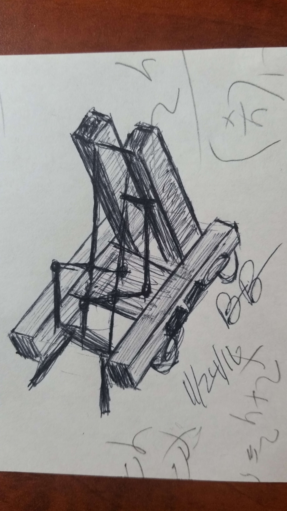
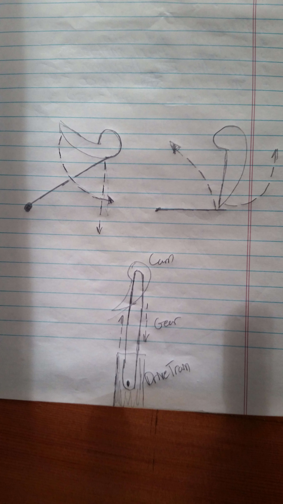

We have an outstanding work book to demostrate this bot that I will be posting here. Vex Robotics. This was a document pushed into html with out its pictures. Will come back to fix pictures.
Here are some drawings. The first one I did on the back of my math homework when I was bored waiting on a call.


5249C
https://www.youtube.com/watch?v=-y7MuLl_cyw
Table of Contents:
Member introduction -TBD
Define the Process
Research
Daily Log (Contains goals and a general description of the day -used to stay on track)
Technical Log Stage 1 (Chronicles the building of the robot and why certain approaches are chosen)
Technical Log Stage 2 (Chronicles the troubleshooting phase once the robot has been put together)
Sketches
Rough Sketches
Refined Sketches
Final Sketches
Coding Log (original code + troubleshooting)
�
Defining the Problem
Rubric: http://www.roboticseducation.org/documents/2015/06/vrc-design-award-rubric.pdf
Pole hanging in another game: FRC 1114 2010 hang
Winning design notebook: http://www.roboticseducation.org/documents/2013/10/vrc-engineering-notebook-2013-team-5327a.pdf
http://www.vexforum.com/index.php/20268-singapore-vex-robotics-championship-2016/0 Singapore Starstruck championship (the link is in the forum) - note, the winning team has won several worlds championships before
Problem
Each match consists of two alliances, red and blue, with two teams per alliance. Each alliance works to earn the most points. There are 28 scoring objects, 4 cubes and 24 stars, and there are two scoring zones, the near and far zones, and the hanging bars on each side. Cubes are worth 2 point is the near zone and 4 points in the far zone, stars are 1 point in the near zone and 2 points in the far zone, and the hang is 4 point for a low hang and 12 points for a high hang. First there is a 15 second autonomous period and then the driver part will begin and will last for a minute and 45 seconds, the whole match lasts for 2 minutes.
Criteria and Constraints
Hanging Criteria:
- Each Alliance has one Hanging Bar from which one Robot can Hang.
- A Robot is considered to be Low Hanging if it is touching the Hanging Bar of its own color and not touching any foam field tiles.
- Low hanging robot is worth 4 points, high hanging robot is worth 12 points
Hanging Restrictions:
Mechanical Criteria:
- Robots may not intentionally detach parts during any Match, or leave mechanisms on the field.
- Only allowed to have one robot to compete with
- No switching robot out throughout competition
Mechanical Restrictions:
- At the beginning of a Match, each Robot must be smaller than a volume of 18 inches wide by 18 inches long by 18 inches tall.
- Strategies aimed solely at the destruction, damage, tipping over, or Entanglement of Robots are not part of the ethos of the VEX Robotics Competition and are not allowed.
- Some incidental tipping, Entanglement, and damage may occur as a part of normal game play.
- Cannot make major changes to robot at competition
- If significant changes are made to a robot, it must be re-inspected before it will be allowed to compete.
Autonomous Criteria:
- At the end of the Autonomous Period the Alliance with the most points receives a four (4) point bonus.
- A 15-second time period at the start of the match when the Robots operate and react only to sensor inputs and to commands pre-programmed by the team into the onboard Robot control system.
Autonomous Restrictions:
- During the Autonomous Period Drive Team Members are not permitted to interact with the Robot, the controls on their VEXnet Joysticks, or to unplug from the field, in any way, directly, or indirectly.
- During the Autonomous Period human operators will not be allowed to use their hand-held controllers.
- Any fouls committed during the Autonomous Period that do not affect the final outcome of the match, but do affect the outcome of the Autonomous Bonus, will result in the Autonomous Bonus being automatically awarded to the opposing Alliance.
Driving Criteria:
- Each team shall include up to three Drive Team Members.
- Minor violations of drive rules will result in a warning
- Match affecting violations result in disqualification
- Drive Team Members are prohibited from making intentional contact with any Scoring Object, Field Element or Robot during a Match
Driving Restrictions:
- Only Student Drive Team Members may touch the team’s controls, Robot, and Scoring Objects at any time during a Match, and are the only Drive Team Members allowed to interact with the Robot as per
- Adult Drive Team Members are not permitted to touch the controls or interact with the robot or Scoring Objects
- The Drive Team Members must remain in their Alliance Station.
General Game Criteria:
- During the qualification rounds, the red Alliance has the right to place its Robots on the field last.
- During the elimination rounds, the higher seeded Alliance has the right to place its Robots on the field last.
- A Team that violates placement rules will have its robots randomly repositioned by the referees.
- Teams that receive multiple warnings may also receive a Disqualification at the head referee's discretion.
- Scoring Objects that leave the playing field will be returned to Zone from which they exited from (e.g. The Zone where the Robot was that launched it or last contacted it on its way out of the field).
- Scores will be calculated for all Matches immediately after the Match after all objects and Robots on the field come to rest.
- intended to be an offensive game
- Teams that partake in solely defensive strategies will undergo extra scrutiny in regard to . In the case where referees are forced to make a judgment call on interaction between a defensive and offensive Robot, the referees will err on the side of the offensive Robot.
- Field tolerances may vary by as much as ±1”, except where otherwise noted, so teams must design Robots accordingly.
- Replays are at the discretion of the event partner and head referee, and will only be issued in the most extreme circumstances.
- Every team has the opportunity to ask for official rules interpretations in the VEX Robotics Competition Question & Answer Forum. All responses in this Q&A forum should be treated as official rulings from the VEX Robotics Competition Game Design Committee, and they represent the correct and official interpretation of the VEX Robotics Competition Rules.
- All teams are expected to conduct themselves in a respectful and professional manner while competing in VEX Robotics Competition events.
General Game Restrictions:
- Once a team has placed its Robot on the field, its position cannot be readjusted prior to the match. Robots must be placed on the field promptly.
- Teams may not intentionally remove Scoring Objects from the field
- A team should design its Robot such that it is not easily tipped over or damaged by minor contact.
- Robots must be designed to permit easy removal of Scoring Objects from any mechanism without requiring the Robot to have power after a Match.
- All teams must adhere to all VEX Robotics Competition Rules as they are written, and must abide by the stated intent of the rules
Research
Grasping Scoring Objects
LINKS
https://www.youtube.com/watch?v=OkVylNNHCOY
https://www.youtube.com/watch?v=DH_oEGOIn6c
There are two ways to approach manipulating the stars: manipulating the object as a whole and individually. Manipulating the objects as a whole encompasses approaching the star as an “unhandlable object”. Instead of using the stars unique shape to one’s advantage, this strategy pushes the stars onto a platform or general area and then launches/handles them. It involves pushing/moving the object onto a more handleable material. This strategy could be used with any oddly shaped object, and may even be applicable to handling both the cubes and the stars.
The other way of manipulating the stars is an individualized method, which handles stars one at a time. The robot may hold more than one star and shoot multiple units, however it picks up stars one at a time. Each star has a “universal grip point”, which will always be accessible no matter the position of the star. Since the star always lies on three points (two short “spokes” and one long), the center point of the star is always the same height from the ground and is accessible every way the star is turned. This enables the team to design an intake system that is more specialized and therefore faster and more efficient. This strategy, however, needs a separate intake for grappling the cubes.
Added 6/8/16
Videos and stuff:
https://www.youtube.com/watch?v=PAo6eAyh-VQ Intake?
https://www.youtube.com/watch?v=MFdfHArsNZk&list=UUQUZr-i-qUIhgvRNCcbOuTw&annotation_id=annotation_1772615321&feature=iv&src_vid=-zJlU6TuqQo Catapult?
http://www.vexforum.com/index.php/19274-vex-starstruck-design-discussion Forum with ideas
https://www.youtube.com/watch?v=-y7MuLl_cyw
Sources:
Hanging
When trying to approach the high hang, the team considered the possibility of “hooking” into the tube and pulling the back of the chassis up. This idea, however, was subject to intense scrutiny over whether the motors would be powerful enough to lift the bottom of the robot. Before physically testing the idea, the team searched the internet to see if this idea, or a similar hypothesis, has been tested. In this Youtube video, an inventor accomplishes the “hooking” mechanism that the team described. This validated the team’s design probability.
Shooting/Manipulating the Objects Over the Fence
Brainstorming:
Added 6/ WHATEVER FIND THE DATE U LAZY
Sources:
Autonomous Strategies
Brainstorming:
In order to play autonomous offensively, that is, try to knock stars into the opponent's area instead of block them, one could create a bar that can knock over all the stars on one third (or another specified length) of the fence. The robot could be programmed to move forward, knock over stars, then move left or right (depending upon the starting position) and knock over the stars on the other fence sections.
Added 6/24/16
Similar to the “bar” strategy listed above, a disk of flippers spinning counterclockwise could potentially knock of stars too. The wheel may be able to double as an intake system if the rotation direction is reversed.
Added 6/24/16
Sources:
Chassis Ideas
�
Explanation for Design Choice
Daily Logs
Meeting 5/11/16
- Introduce the Starstruck game and discuss scheduling and team semantics.
- Establish game parameters and other restrictions.
- Physical design parameters.
- Game and rule parameters.
- Miscellaneous restraints and boundaries.
- Begin design process: defining the problem and begin research.
Meeting 5/18/16
- Finish defining the problem (seen under the First Meeting tab).
- Brainstorm various strategies and mechanical devices based on the following inquiries.
- How to manipulate the stars and cubes in an efficient way.
- Hanging strategies and possible ways to grasp the pipe.
- Figure out how to shoot/dump/fling stars over the fence.
- Attempt to brainstorm ideas to maximize autonomous points.
- Chassis ideas and possible gear train ratios.
- Begin research into broad general strategies (exclude researching individual mechanics):
- Look at previous VEX competitions and other machines fro inspiration.
- Create a list of cited sources for inspiration.
Meeting 6/1/16
- Brainstorm ideas on how to solve problem (problem- seen/ defined under First Meeting tab)
- As well as the other brainstorm objectives from Second Meeting
- Research strategies to solve problem from above
Meeting 6/8/16
- Continue brainstorming and researching
- Establish summer goals in order to begin prototyping when school begins again
- Designate individual research responsibilities for the summer
Meeting 9/20/16
- Began viewing reveal videos of other teams online in order to gather ideas for prototypes
- Began sketching basic rough ideas and verbally debated merits of each
- Setup playing field for future practice
Meeting 9/27/16
- Continued sketching prototype ideas and verbally debating their merits
- Decided on a final design (see Explanation for Design Choice) of a CAM based robot and began sketching detailed drafts of the robot prototype
- Discussed the solutions to lift the robot up on the pole - discussion inconclusive, design will be revisited later when more of the robot is conceptualized
- Created parts list for the chassis (CHECK DATES)
Meeting 10/4/16
- Began building chassis prototype - motor drives; completed one half of the motor drive (see images in Technical Log)
- Created parts list for CAM
- Drew CAM piece with inventor - not finished
- Researched cam catapults and 3 motor drives
- Decided on gear ratio for chassis: 3:1
- Organized technical journal and decided on final layout (see table of contents for layout)
Meeting 10/18/16
- Created the second half of the motor drive
- Began creating the CAM prototype
Meeting 10/22/16
�
Technical Log Stage 1
10/4/16
- Began building chassis and drivetrain
- Sprocket ratio: 18:6 → 3:1 ratio total
- The wheels were put on slightly asymmetrically - one side is 2 inches from the edge of the chassis and the other is 2.5 inches away. The 2 inch edge is marked blue in order to avoid confusion.
- Notes: axles will be cut later
10/18/16
- Created second half of the wheel casing and motor drive
- Cut the axles (mentioned in last log)
10/22/16
- Brainstormed ideas for bracing the motor casings together - decided on using 3 5x25 C channels
- Began to build CAM Drive train prototype
10/25/16
- Began to rebuilt CAM drive train
- Readjusted chassis in order to brace the wheel casing
- Notes: spacing needs to be readjusted next week in order to make chains run parallel to each other
11/1/16
- Finished adjusting chassis in order to brace the wheel casing
- Loosened axles to lessen friction when driving
- Due to Brendan’s return (Brendan was the chief designer of the train), the CAM drive train was finally completed
11/3/16
- After having persistent trouble designing the CAM drive train, the team decided to look for new options for ways to throw the star.
- After examining videos of Starstruck bots and consulting with team members, it was decided to abandon the CAM idea in favor of a claw-based bot
- Sketches were drawn up of the new bot (see sketch section)
- Because of the redesign, no progress was made on physical robot.
- No images are included because nothing physically changed on the bot.
11/15/16
- Began physically remaking the robot - see 11/15/16 and 11/3/16 sketches for design info
- Due to errors in modifying the chassis, it was noticed that the spacing was slightly uneven (about half an inch). The chassis was henceforth taken apart and remade to be even. The design is almost entirely the same as the original seen above.
- Began to build the claw apparatus prototype
11/17/16
11/22/16
- Tested out code for claw drive train (see coding section)
- Began building chassis for claw
- Note: due to bad planning, it became extremely troublesome to insert screws into the bot. As a warning for next meeting, the team should make it a priority to plan out how they will attach the robot parts to insure this does not happen again.
- Did stuff.
11/29/16
- Began sketching a second lift redesign in order to accomodate a high hang mechanism
- Took apart the stand in order to later add a higher attatchmment
- THE STAND WAS NOT LONG ENOUGH
- Took wheels off in order to make more room for grappling mechanism
12/1/16
- Moved wheels closer to baseplate in order to make more room for grappling mechanism
- Began building extended chassis for lift mechanism
- Began sketching out final detailed sketches